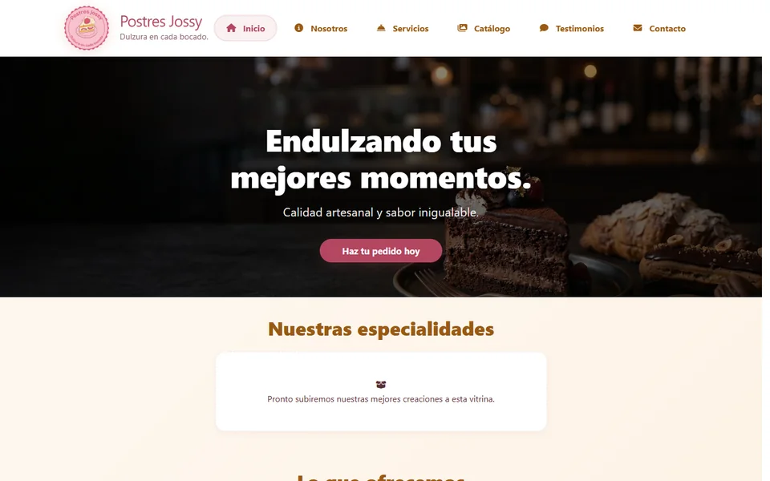

Aplicación web
Postres Jossy
Catálogo público y sistema de gestión para organizar postres, categorías, comentarios, testimonios y usuarios.

El reto
Presentar un catálogo que pueda crecer
La experiencia pública debía facilitar la exploración del catálogo, mientras el negocio necesitaba actualizarlo desde un panel privado.
Los datos, imágenes y relaciones debían validarse de forma explícita: una publicación incompleta se rechaza en lugar de ocultarse con contenido de sustitución.
La solución
Catálogo y gestión en un solo sistema
- Catálogo Búsqueda indexada, categorías, paginación y detalle de cada postre.
- Comunidad Comentarios y testimonios vinculados al perfil de cada visitante.
- Acceso público Inicio de sesión con Google para participar sin crear otra cuenta.
- Administración Panel adaptable para gestionar el catálogo, las categorías, los usuarios y los roles.
- Multimedia Validación de formato, tamaño y contenido de las imágenes.
- Resultado Catálogo público y panel administrativo publicados y documentados.